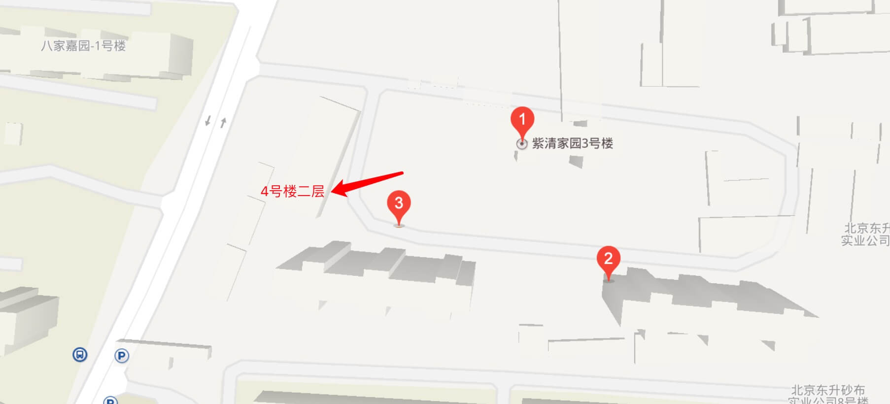

北京市海淀区学院路街道紫清家园3号楼-2单元-2804(合租)¶
物业工作时间: 8:00 - 17:00, 物业地点: 北京市海淀区双清路紫清家园4号楼二层

水费¶
自来水公司定期抄表，用后结算，水卡是只管理厕所用水
电费¶
充值200元，400度电，需要联系物业开电表间插上
燃气费¶
需要在建行拿IC卡充值，目前暂不支持网络交费。
我先交了91.2元费用，预计使用1个多月
网络费¶
在租房的服务费中包含了
门锁(果加GC+)¶
大门：MzIyODA0Cg== 房间: NTQzODU5MjMwCg==
(2015.12 - 2018.4.7)北京市海淀区清华东路甲七号院1号楼1202室 - 隔阳¶
因为是合租房，费用分担需要和各户商量好
水费¶
厨房和洗手间各有一个水表，通过表数差乘以水费费率计算。北京市水费费率请自行搜索。
电费¶
电费缴纳还不能通过网络的方式，是通过到指定的地点给电卡充值购电后插入住户电表取电的方式进行的。
电卡充值地点¶
地址: 花园路1号院内，塔院写字楼西边的楼里的三层最里面的屋子
可以从同观商业中心正对着的小区入口进去寻找, 细箭头是小区入口

充电卡单位工作时间：¶
周一至周五
-
上午: 8:00 - 12:00
-
下午: 2:00 - 6:00
宽带费用¶
网费可以使用微信生活缴费功能查询和缴纳：
(由于开户人夏晓璐帐户变更停用该上网帐号)11531803
需要自行开通网络帐号, 最好是个人帐号：
- 新开了一年的长城宽带50M, 880元/年， 比原来的联通节省了一半的费用，不知道好不好用，先试用一段时间再说
燃气费¶
可以使用微信生活缴费功能查询和缴纳：96577390000
卫生注意事项¶
-
厨房不要堆积未吃完的食物，会吸引蟑螂
-
垃圾不要放在屋内，可临时放于门外，不过最好第二天就顺手带到楼下的垃圾桶里
-
上完厕所，请把纸放入厕纸桶，不要丢到地上或者管道上，很难清理，最好在厕纸桶内套个垃圾袋，便于清洁
-
下水道的过滤器是为了避免管道堵塞用的，可以把头发丝或者别的大块的物品拦住，我们不要为了方便就把那个取走，而是要在看到堵了之后，定期的清理过滤器。同样的，厨房的冲洗池里也有一个过滤器，同样的处理方式。
-
冰箱是公用，大家按自己的需要放东西，不要堆满或者占用太多空间，给其它人也留点位置